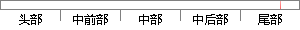

表5-3 内存管理模块的测试用例和结果
片段位置图

相似结果
相似片段：包括3个子模块:处理器模拟宏模块、内存模拟模块和I,口、测试用例和结果记录管理...解释执行 文件中内嵌的调试器的调试信息,对符号表的管理,对源代码表 圆圆 达...
| 标题 | 《通用嵌入式系统软件测试平台的设计 - 期刊论文 - 道客巴巴》 |
| 对比库 | PaperRater云论文库 |
| 网址 | http://www.doc88.com/p-20871763093.html |
| 相似率 | 76.92% （轻度抄袭） |
※ 片段修改建议 ※
近似词参考：- 管理：办理 经管 治理
- 结果：成果 成绩 成效 后果 了局 效果
系统自动生成语句：表5-3 内存办理模块的测试用例和成果
注：本片段修改建议为系统自动生成，仅供参考。